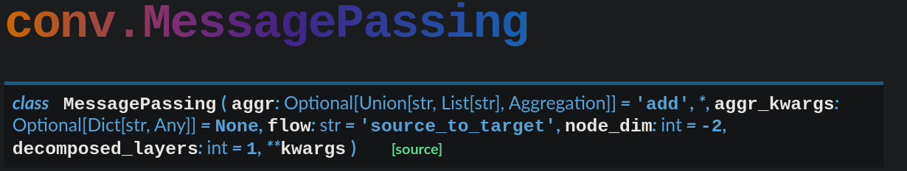

5 Graph Attention Networks
The Graph Attention Network, or GAT, is a graph neural network which addresses the following questions: 1. Of what importance are the features of a neighbouring node to the primary node? 2. Can we learn this importance, in an automatic manner?
First we discuss the inputs and outputs of the graph attention Layer
6 Graph Attention Layer
6.1 Inputs and outputs
INPUT: a set of node features \(h=\{\bar h_1, \bar h_2, \cdots, \bar h_n\}, \bar h_i\in \mathbb{R}^F\)
OUTPUT: a set of node features \(h'=\{\bar h'_1, \bar h'_2, \cdots, \bar h'_n\}, \bar h'_i\in \mathbb{R}^{F'}\)
6.2 Internal computations of the graph attention layer
Apply a parameterized linear transformation to every node. \[\textbf{w}.\bar h_i, \textbf{w}\in\mathbb{R}^{F'\times F}\]
Apply a self attention mechanism, \(a\), described as \[ \begin{gather} a:\mathbb{R}^{F'}\times \mathbb{R}^{F'}\to\mathbb{R} \\ e_{i, j} = a(\textbf{w}\cdot\bar h_i, \textbf{w}\cdot\bar h_j) \end{gather}\] The coeffecient \(e_{i, j}\) specify the importance of node \(j\)’s feature to node \(i\). where \(a\) is a single-layer feed forward neural network
Normalize with respect all neighbors \[\alpha_{i, j} = \text{softmax}_j(e_{i, j}) = \frac{exp{e_{i, j}}}{\sum\limits_{k\in N(i)} exp(e_{i, k})}\]
Use \(\alpha\) in message passing \[h'_i = \sigma\bigg(\sum\limits_{j\in N(i)} \alpha_{i, j} \textbf{w}\cdot h_j\bigg)\] In practice however we use multi-headed attention which involves calculating multiple overlapping values of \(\alpha\) and using that in the formula instead. In Veliˇckovi´’s paper it is suggested to use concatenation in the inner layers of the network and an averaging mechanism for the final layer. These are expresed respectively in the following formulas: \[ \begin{gather} h'_i = \bigg|\bigg|_{k=1}^K \sigma\bigg(\sum\limits_{j\in N(i)}\alpha_{i, j}^k\textbf{w}^k h_j\bigg) \\ h'_i = \sigma \bigg( \frac{1}{K}\sum\limits_{k=1}^K\sum\limits_{j\in N(i)} \alpha_{i, j}^k\textbf{w}^k h_j\bigg) \end{gather} \]
7 Pros of GATs
- GATs are computationally effecient:
- Self-attention layers can be parallelized across edges
- Output features can eb parallelized across nodes
- Allows us to assign different importances to nodes of a same neighborhood.
- It is applied in a shared manner to all edges in the graph.
- Not required to have the entire graph before hand
- Works on both
- Transductive learning (Cora, Citeseer, Pubmed)
- Inductive learning (PPI)
- Addresses problems of the naive approach to dealing with graphs by processing adjacency matrices. (all GNNs share this benefit).
8 Message passing implementation of GAT
Message passing network framework as a single formula:
\[x_i^{(k)} = \gamma^{(k)}\bigg(\textbf{x}_i^{(k-1)}, \sum\limits_{j\in N(i)}\phi^{(k)}\bigg(\textbf{x}_i^{(k-1)}, \textbf{x}_j^{(k-1)}, e_{j, 1}\bigg)\bigg)\] where, - \(x_i^{(k)}\) is the feature representation of node \(i\) at the k-th layer of the computation graph. - \(\gamma^{(k)}\) is a differentiable and trainable function - \(\sum\) is a permutation invariant aggregation scheme - \(\bigg( , \bigg)\) is concatenation - \(\phi^{(k)}\) is a differentiable and trainable function}
9 A plan to implement a GAT with Pytorch-geometric
Pytorch Geometric comes with an in-built message passing base class. To implement a GAT-based network we must only supply it with a message function, an update function, and the aggregation scheme. 